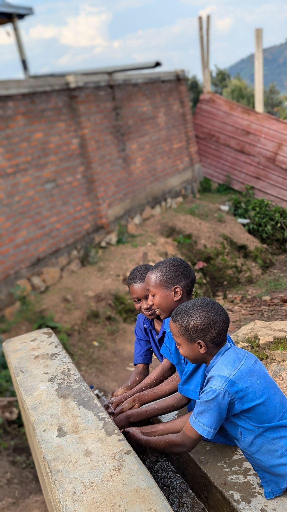
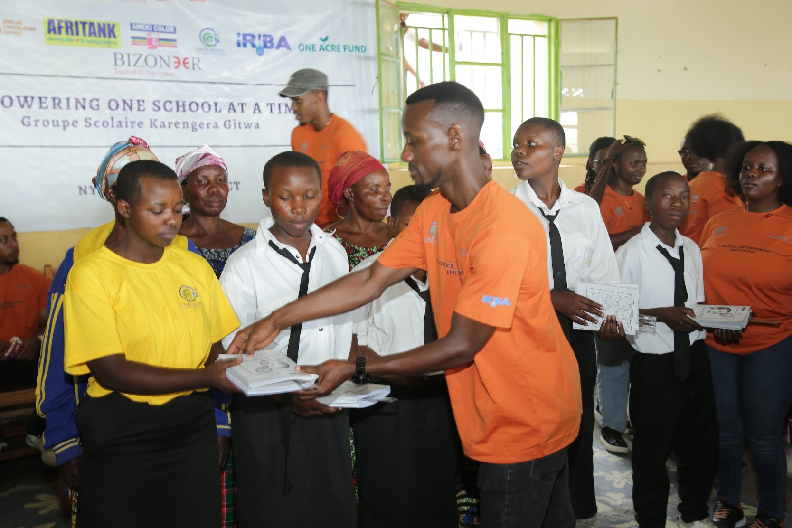

It is hard to focus on a lesson when you are thirsty, unwell, or worried about where your next drink of safe water will come from. For the students of Groupe Scolaire Karengera Gitwa, that worry is now gone.
From August to November 2025, Hope for Tomorrow partnered with the Rotaract Club of Kigali City to run the “Empowering Nyamasheke District – One School at a Time” initiative at a school in Nyamasheke District, Western Province. The project built a 10,000-litre rainwater harvesting tank, installed a water purification system, and set up a handwashing station. Students and staff now have clean, safe water every day.
The initiative delivered
The essentials students need to learn well
Clean water makes the whole school healthier. It reduces illness, improves hygiene, and gives students and staff a basic need they can count on.

The project also tackled period poverty by distributing 400 reusable menstrual hygiene kits to adolescent girls. Alongside the kits, girls took part in sessions on menstrual hygiene management, how to use and care for reusable products, reproductive health, and dignity during menstruation.
For many girls, this means they can now manage their period with confidence and no longer have to miss school because of it.

At its core, this project was about giving students safety, comfort, and dignity, and about helping build a community that can support its own children long after the project ends.
We are grateful to the school leadership, the local authorities, and the community of Nyamasheke for their support and partnership. We look forward to building on this work together.